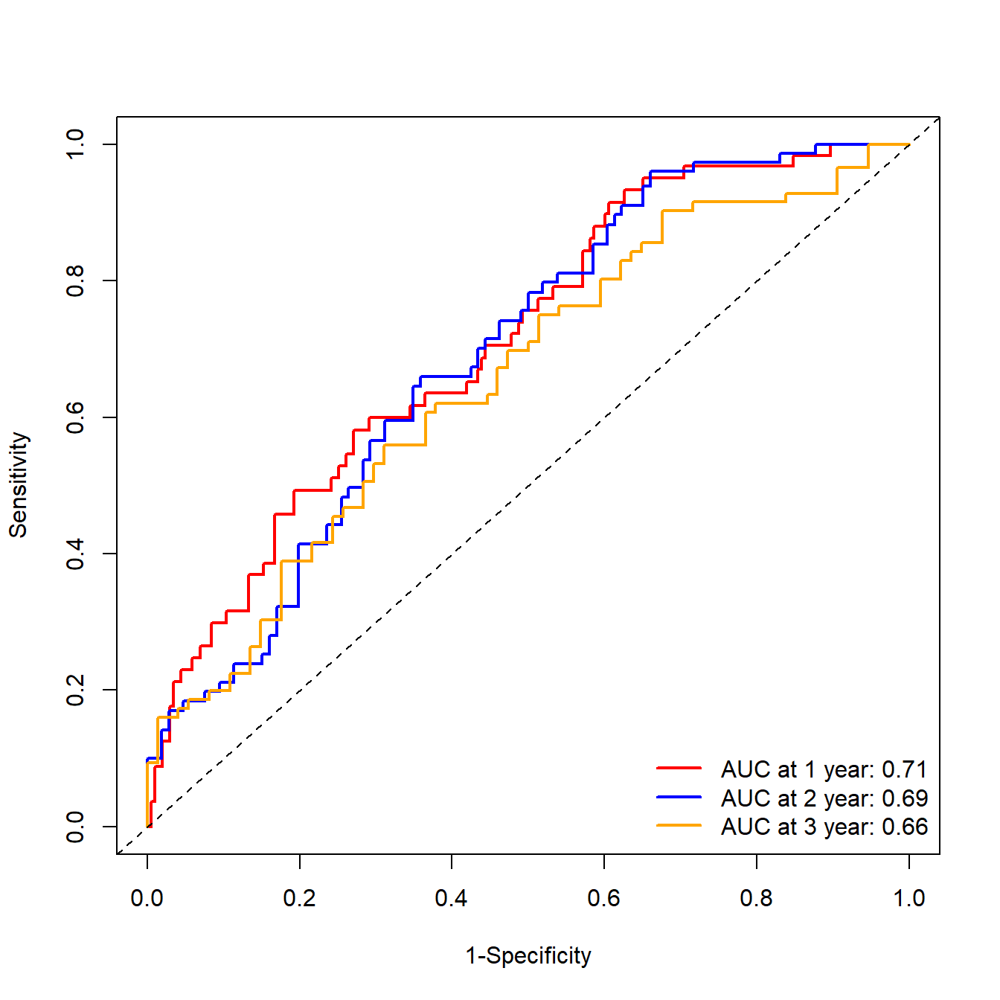

26 生存资料ROC曲线的最佳截点和平滑曲线
二分类变量的最佳截点直接使用pROC包就可以直接得到，前面也介绍过，今天主要说一下生存资料ROC曲线的最佳截点，以及生存资料的ROC曲线如何变得平滑。
26.1 平滑曲线
不考虑时间因素的ROC曲线可以使用pROC包中的smooth参数实现平滑版的曲线。time dependent ROC目前还没发现比较好的方法可以直接实现，只能使用ggplot2曲线救国了。
26.1.2 多个时间点ROC
首先看一下数据结构，对于多个时间点的ROC，需要3列数据：time, event, marker(比如你计算得到的risk score)
ROC <- timeROC(T = df$futime,
delta = df$event,
marker = df$riskScore,
cause = 1,
weighting = "marginal",
times = c(1, 2, 3),
iid = TRUE)
ROC #查看模型变量信息
## Time-dependent-Roc curve estimated using IPCW (n=297, without competing risks).
## Cases Survivors Censored AUC (%) se
## t=1 57 203 37 71.02 3.68
## t=2 66 106 125 69.23 3.94
## t=3 68 74 155 65.53 4.85
##
## Method used for estimating IPCW:marginal
##
## Total computation time : 0.1 secs.默认的画出来也还可以，但是就是觉得可以更好看一点。
plot(ROC,
time=1, col="red", lwd=2, title = "") #time是时间点，col是线条颜色
plot(ROC,
time=2, col="blue", add=TRUE, lwd=2) #add指是否添加在上一张图中
plot(ROC,
time=3, col="orange", add=TRUE, lwd=2)
#添加标签信息
legend("bottomright",
c(paste0("AUC at 1 year: ",round(ROC[["AUC"]][1],2)),
paste0("AUC at 2 year: ",round(ROC[["AUC"]][2],2)),
paste0("AUC at 3 year: ",round(ROC[["AUC"]][3],2))),
col=c("red", "blue", "orange"),
lty=1, lwd=2,bty = "n") 
下面使用ggplot2画图。
首先是提取数据，这个提取数据比起lasso的真的是很简单了，不过现在提取lasso的数据也很简单。
df_plot <- data.frame(tpr = as.numeric(ROC$TP),
fpr = as.numeric(ROC$FP),
year = rep(c("1-year","2-year","3-year"),each = nrow(ROC$TP)))
head(df_plot)
## tpr fpr year
## 1 0.00000000 0.000000000 1-year
## 2 0.00000000 0.004926108 1-year
## 3 0.01809868 0.004926108 1-year
## 4 0.03681243 0.004926108 1-year
## 5 0.03681243 0.009852217 1-year
## 6 0.05425138 0.009852217 1-year26.1.3 画平滑曲线
下面是画图代码，平滑曲线，说简单确实简单，如果对ggplot2不熟悉，确实也很难想到：
library(ggplot2)
## Warning: package 'ggplot2' was built under R version 4.2.3
p <- ggplot(df_plot, aes(fpr, tpr, color = year)) +
geom_smooth(se=FALSE, size=1.2)+ # 这就是平滑曲线的关键
geom_abline(slope = 1, intercept = 0, color = "grey10",linetype = 2) +
scale_color_manual(values = c("#E41A1C","#377EB8","#4DAF4A"),
name = NULL,
labels = c(paste0("AUC at 1 year: ",round(ROC[["AUC"]][1],2)),
paste0("AUC at 2 year: ",round(ROC[["AUC"]][2],2)),
paste0("AUC at 3 year: ",round(ROC[["AUC"]][3],2)))
) +
coord_fixed(ratio = 1) +
labs(x = "1 - Specificity", y = "Sensitivity") +
theme_minimal(base_size = 14, base_family = "sans") +
theme(legend.position = c(0.7,0.15),
panel.border = element_rect(fill = NA),
axis.text = element_text(color = "black"))
## Warning: Using `size` aesthetic for lines was deprecated in ggplot2 3.4.0.
## ℹ Please use `linewidth` instead.
## This warning is displayed once every 8 hours.
## Call `lifecycle::last_lifecycle_warnings()` to see where this warning was
## generated.
p
## `geom_smooth()` using method = 'loess' and formula = 'y ~ x'
这一刻，我觉得我很强！
26.2 找最佳截点
找了好久也没发现一个R包可以完成time-dependent ROC的所有分析，timeROC是比较全能的了，但是不能计算最佳截点，survavalROC可以计算最佳截点，但是又不能同时计算多个时间点的ROC曲线。
所以最佳截点我们可以通过survivalROC包实现。
library(survivalROC)
# 1年的最佳截点
roc1 <- survivalROC(Stime = df$futime,
status = df$event,
marker = df$riskScore,
method = "KM",
predict.time = 1 # 时间选1年
)
roc1$cut.values[which.max(roc1$TP - roc1$FP)] # 最佳截点的值，基于约登指数计算出来
## [1] -0.07986499就是这么简单！